12 42 540 Replacing Safety Battery Terminal (SBK)
12 42 540 - Replacing safety battery terminal (SBK)
Caution!
Observe safety regulations.
Investigate cause of triggering of safety battery terminal.
To do so, read out fault memory of airbag control unit. Note fault messages stored in memory. Rectify faults. Then clear fault memory.

Use of safety battery terminal:
- From model year 1998 in Series E38, E39, E46
- From 4/99 in E36/Z3
- in each of following new Series
The different models have different installation locations:
Battery in engine compartment
Safety battery terminal is replaced with cable up to battery positive support point.
Safety battery terminal is omitted as from 03/2002 from all E46 LHD models with 4-cylinder engines.
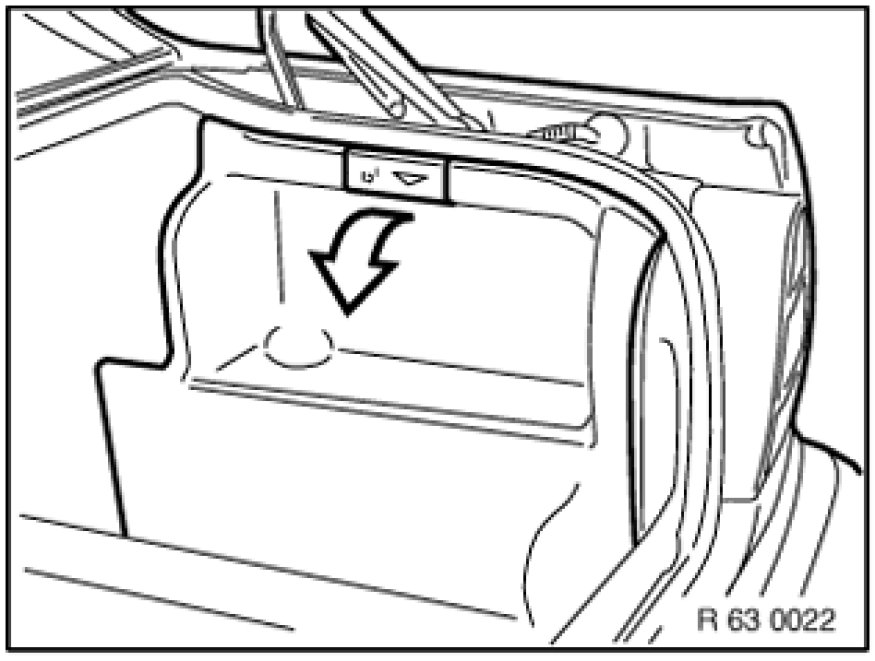
Battery in luggage compartment behind side trim panel
Remove side trim panel.
Follow instructions for disconnecting and connecting battery [1][2]12 00 ... Instructions For Disconnecting and Connecting Battery.
Disconnect and cover battery negative lead.
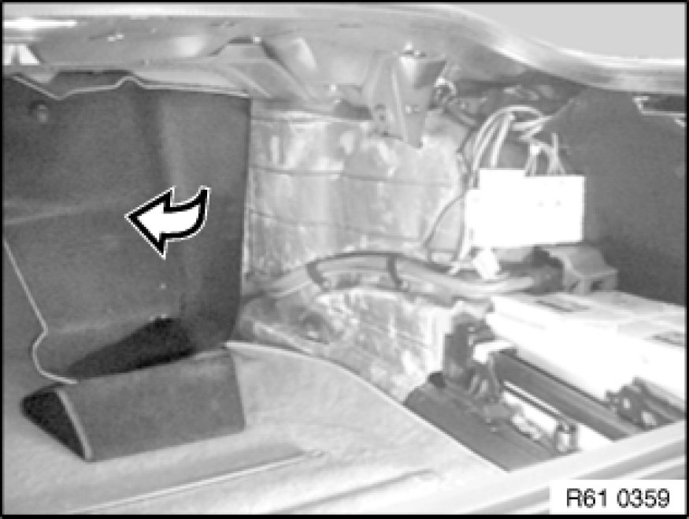
Release front side trim panel partly and fold forward.
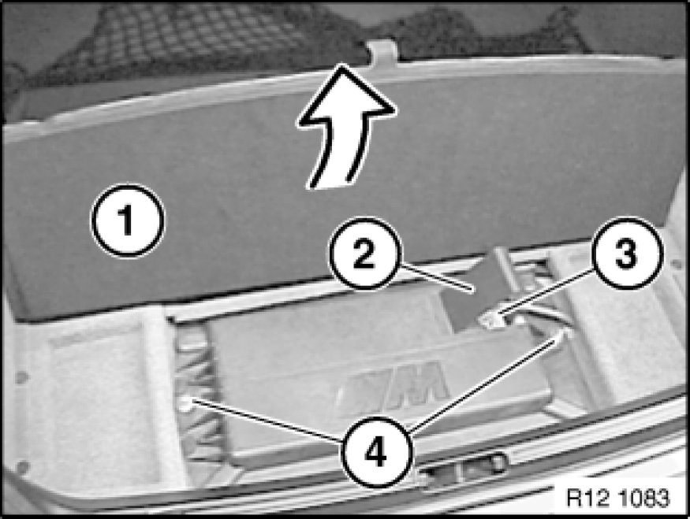
Battery in luggage compartment under floor trim panel
Follow instructions for disconnecting and connecting battery [1][2]12 00 ... Instructions For Disconnecting and Connecting Battery.
Fold back floor trim panel (1).
Lift cover (2) on battery negative lead.
Disconnect and cover battery negative lead (3).
Release nuts (4).
Remove battery cover.
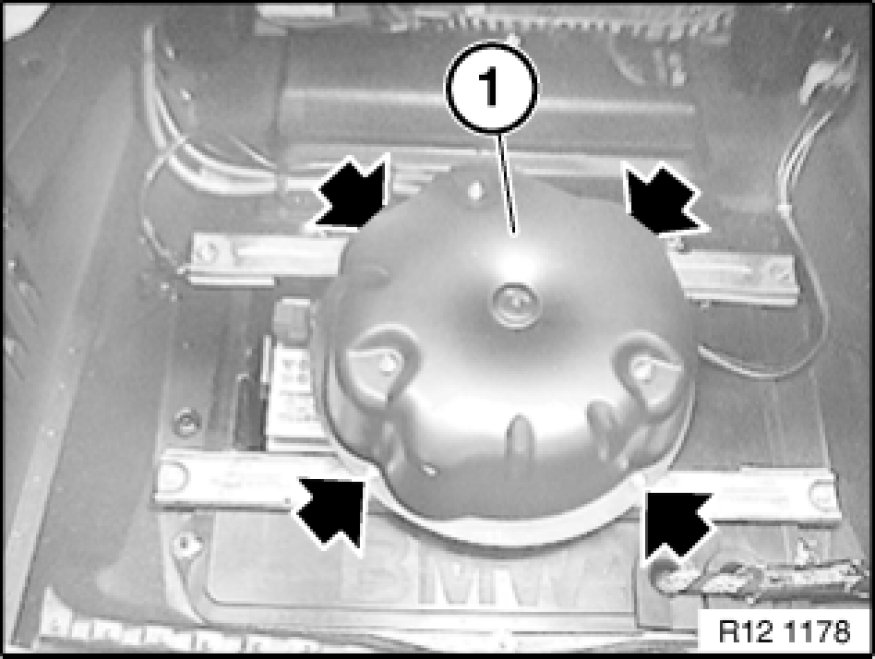
Battery in luggage compartment under spare wheel
Remove spare wheel.
Release screws.
Caution!
Do not kink air pipes.
Set air supply system (1) to one side.
Follow instructions for disconnecting and connecting battery [1][2]12 00 ... Instructions For Disconnecting and Connecting Battery.
Disconnect battery negative lead.
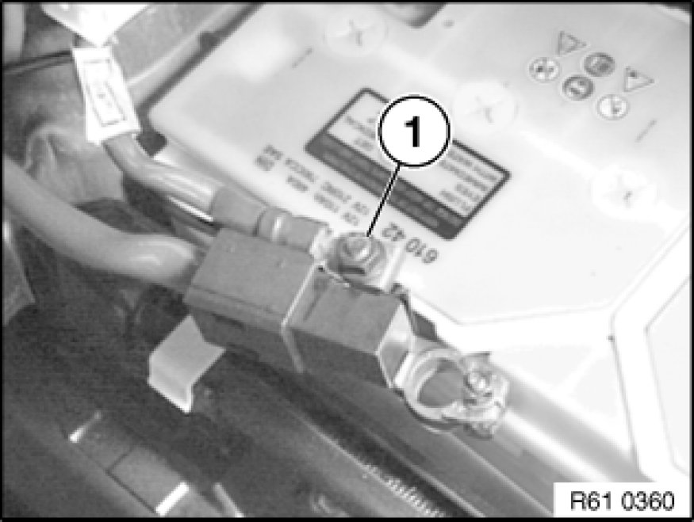
Disconnect supply cable (1) for vehicle electrical system.
Installation:
Remove faulty fuses and carry out troubleshooting.

Caution!
Pay attention to interface.
The repair cable is always a standard length.
The heavy-current connector of the repair cable has a larger diameter than the battery positive lead.
In some Series (e.g. E46 touring), the heavy-current connector of the repair cable can lead to installation problems.
This is the case when the interface is in the area of the close-fitting trim panels.
Find matching interface (e.g. approx. 10 cm behind rear seat backrest in E46 touring).
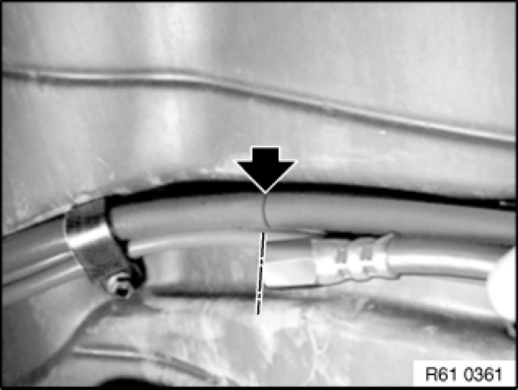
Lay repair cable parallel to battery positive lead.
Mark interface of battery positive lead at end of repair cable.
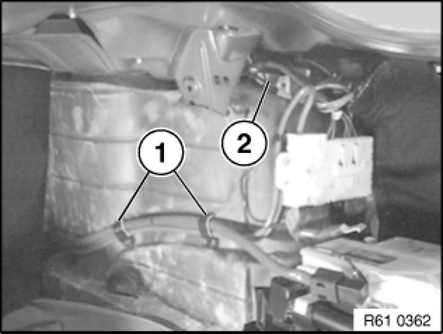
Release cable ties (1).
Disconnect plug connection (2).
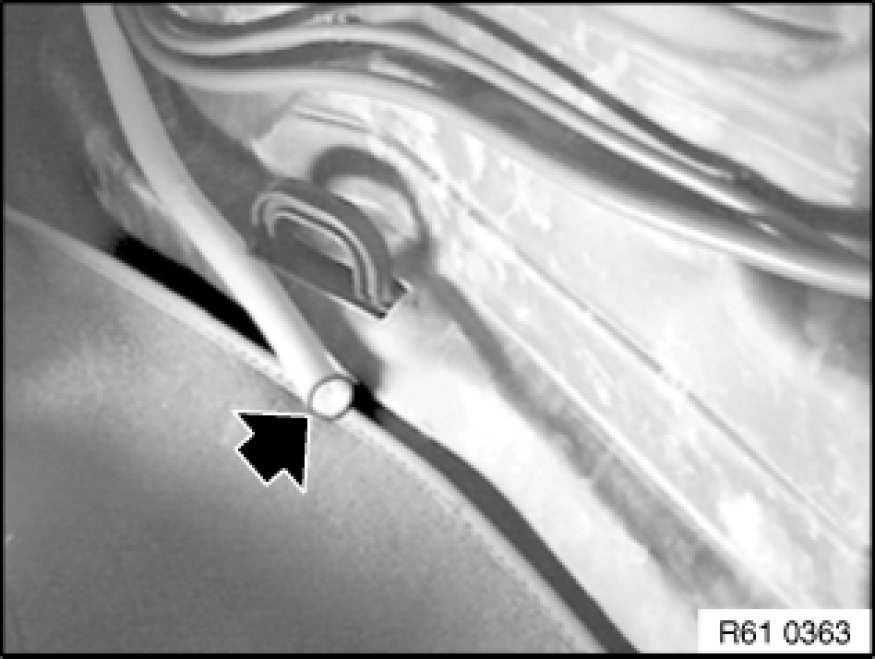
Caution!
Do not use bolt cutters or similar tools to cut through the cable.
A cable end that has been squashed flat will no longer fit into the clamping sleeve.
Saw through battery positive cable at marked point with an iron saw.
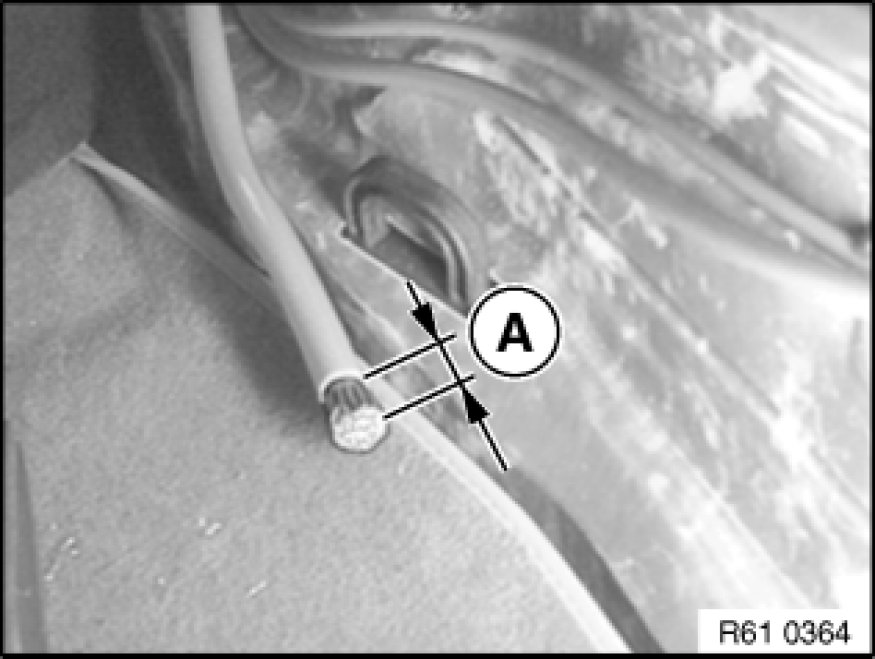
Strip insulation - length (A) - from cable end.
Distance (A) = 15 mm.
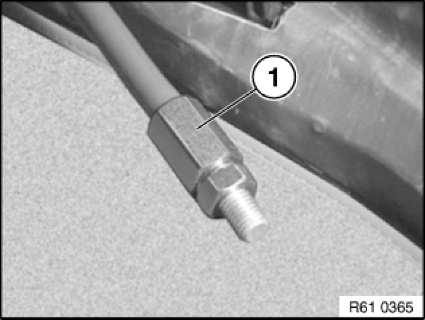
Push heavy-current connector (1) over stripped cable end and screw into position.
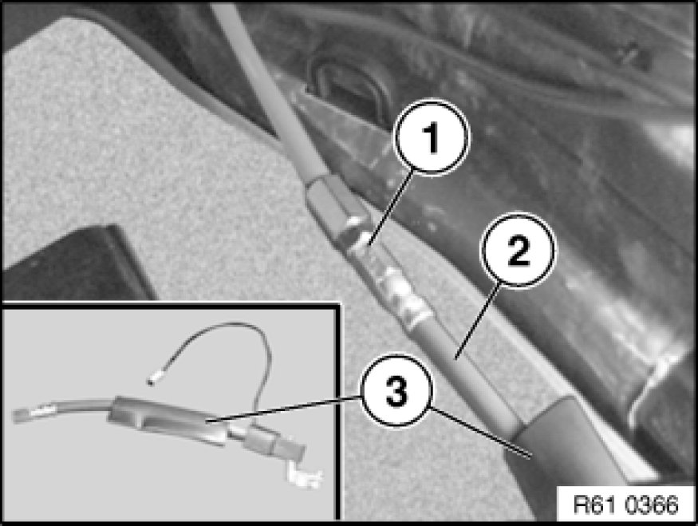
Push shrink-fit hose (3) over repair cable.
Screw threaded sleeve (1) of repair cable (2) to heavy-current connector.
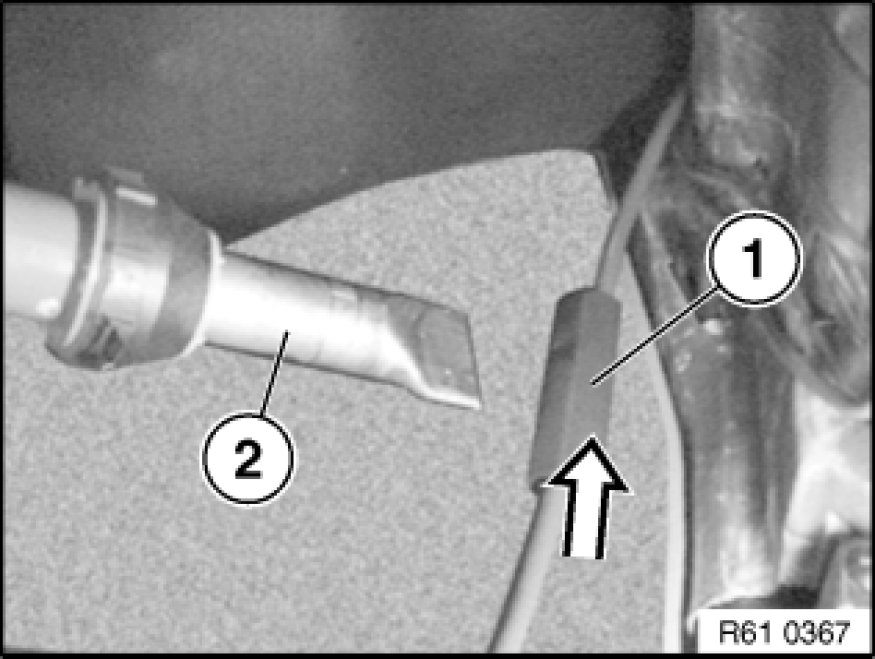
Push shrink-fit hose (1) over connecting point and shrink on with a hot-air blower (2).
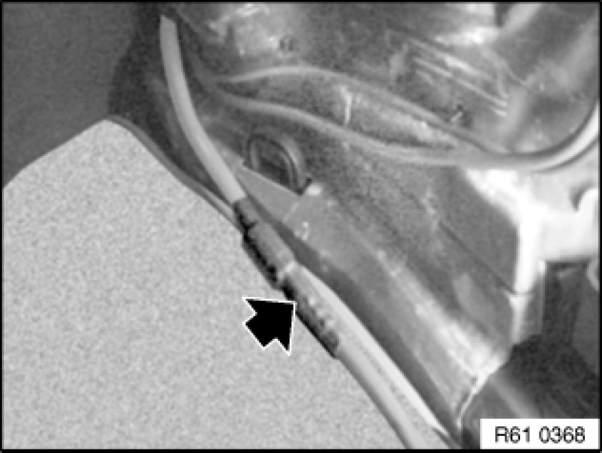
Note:
Heat up shrink-fit hose until it has settled completely around the connection point.
When laying the repaired battery positive cable, observe the following:
- The shrink-fit hose must not be scuffed during any movement.
- The repair cable must not cause any disturbing noises during driving operation.
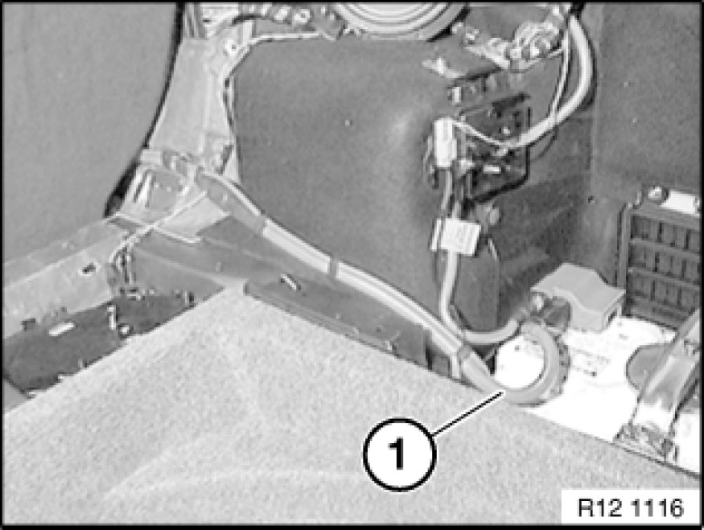
Note:
Offsetting cutting line by approx. 10 cm produces excess length of battery positive lead (1).
Lay battery positive lead (1) without kinks or abrasions.
(Shown on E46 touring.)